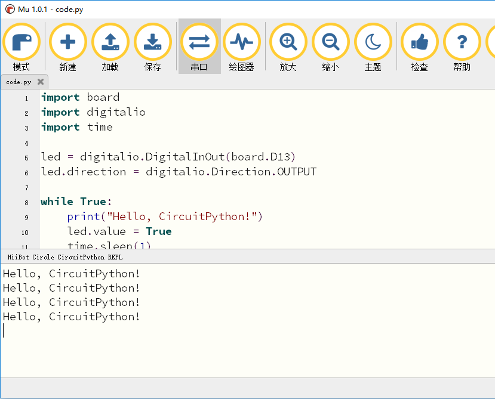

6. 串口控制台交互¶
6.1. 串口控制台¶
编写程序的时候通常会需要输出程序运行中的一些信息，常用的就是print方法，CircuitPython也具备这功能。
print("Hello, world!")
这行代码的执行结果就是打印输出“Hello, world!”
Hello, world!
然而这些打印输出的信息需要有地方呈现，这就是串口控制台的作用了，可以呈现打印输出的信息。 串口控制台通过USB接收编程圆的输出信息并呈现打印信息。所以只要将编程圆通过USB插上电脑就行。
6.2. Mu串口控制台¶
我们可以通过电脑的控制台去连接编程圆的串口输出，也可以使用Mu自带的串口连接编程圆的串口输出。我们建议使用Mu，因为简单方便。
首先我们修改编程圆上的闪灯代码，加入print功能，输出打印一些信息。可以拷贝一下代码并保存。
import board
import digitalio
import time
led = digitalio.DigitalInOut(board.D13)
led.direction = digitalio.Direction.OUTPUT
while True:
print("Hello, HiiBot Circle!")
led.value = True
time.sleep(1)
led.value = False
time.sleep(1)

在Mu下方多出一个控制台窗口，编程圆的打印输出信息都在控制台窗口呈现。
可以尝试修改输出信息，保存后查看新的输出信息。
import board
import digitalio
import time
led = digitalio.DigitalInOut(board.D13)
led.direction = digitalio.Direction.OUTPUT
while True:
print("Hello back to you！")
led.value = True
time.sleep(1)
led.value = False
time.sleep(1)